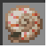
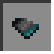
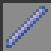
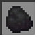
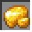

Stone Golem
Miner
The Stone Golem is the miner. Put its chest where you want a quarry and it will cut the rock and ore around it.
Building a Stone Golem
Place the golem's body block, then put a carved pumpkin or jack o'lantern on top. The pumpkin is consumed, the body block becomes the golem's chest, and the golem stands on it. You do not need a chest first: the pattern makes one. The golem is bound to that chest and starts dormant.
The chest is also craftable, so you can move or replace it:


Waking it up
A golem starts dormant: head hanging, standing still, holding out the thing it wants in its off hand. Right-click it with that item to give it an offering. Each offering is worth 45 minutes of work and it stores at most two (90 minutes). It then asks for something different, so no single item will do. The clock runs only while the golem is loaded and has a job site.
These are the items it can ask for. They are deliberately unrelated to its job, so keeping a large operation going means going out exploring.

Nautilus Shelldrowned, fishing Prismarine Crystalsocean monuments
Prismarine Crystalsocean monuments Echo Shardancient cities
Echo Shardancient cities
Disc Fragmentancient cities Chorus Fruitthe End
Chorus Fruitthe End Phantom Membranephantoms
Phantom Membranephantoms Ghast Tearghasts
Ghast Tearghasts
Breeze Rodbreezes
What it does
- It digs rock that is already exposed to air within 7 blocks of its chest, working inward from the faces it can see rather than boring through the ground.
- It never digs below the chest's level and only up to two blocks above it: it cuts a tunnel or a quarry face, not a pit it could fall into.
- It will not break a block that would let a liquid in or bring sand or gravel down on it.
- Ore is taken before plain stone, and drops what an iron pickaxe would give: ore it cannot harvest properly is left alone.
- It digs a dozen blocks, then collects the drops and takes them to the chest. It needs no supplies.
Like every golem it carries one stack at a time: it has no inventory, picks things up in its hand, takes them to its chest and goes back for the next. Supplies come out of the chest the same way.
It produces
 Cobblestone
Cobblestone Granite
Granite Diorite
Diorite Andesite
Andesite Tuff
Tuff Cobbled Deepslate
Cobbled Deepslate
Coal Raw Iron
Raw Iron Raw Copper
Raw Copper
Raw Gold Redstone Dust
Redstone Dust Lapis Lazuli
Lapis Lazuli Diamond
Diamond Emerald
Emerald
Notes
- Place the chest at the height you want to mine.
- The chest has 27 slots and never joins into a double chest. A golem prefers its own chest to any other nearby.